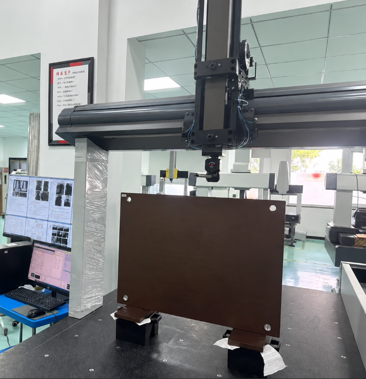
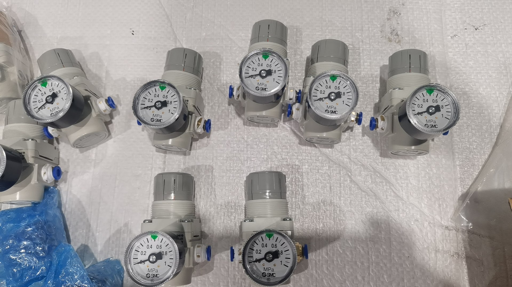

Qingdao Metro-3D
During my engineering internship at Qingdao Metro-3D, I supported dimensional inspection and precision measurement work for parts used in automotive and other industrial applications. My day-to-day work centered on preparing coordinate measuring machines (CMMs), setting up and calibrating probes, measuring production parts, recording results, and investigating discrepancies between measurements.
I worked across 2 CMM models and 3+ probe configurations, adapting the measurement setup to the geometry and inspection requirements of each part. The role provided hands-on exposure to the complete measurement workflow, from preparing the machine and probe configuration to collecting dimensional data and reviewing the results. I worked with different CMM models and probe configurations depending on the part and inspection requirements, using RationalDMIS to carry out and document precision measurements.
A typical measurement process began with preparing the CMM and selecting the appropriate probe configuration for the features being inspected. Different probe configurations allowed the machine to access different surfaces and geometries on a part. I was responsible for setting up these configurations, preparing the measurement environment, and making sure the equipment was ready for calibration and inspection.
Probe calibration was performed using measurement artifacts with known geometric dimensions. The process established the probe's effective geometry and its position relative to the CMM coordinate system before production measurements were taken.
For the spherical calibration process, the first reference point was probed manually to establish the location of the calibration artifact. The CMM could then use that established reference to automatically probe the remaining calibration points. Repeated calibration was an important part of the workflow because the accuracy of the probe setup directly affected the dimensional results obtained from the machine.

Once the CMM and probe configuration had been calibrated, I used RationalDMIS to perform dimensional inspections. Measurements were taken at the micrometer scale, with the specific CMM model and probe configuration selected according to the inspection requirements of the part.
The work involved measuring defined features and dimensions, recording the resulting values, and comparing measurements across repeated setups. I worked with inspection data to identify discrepancies and determine whether they were associated with the measurement configuration, probe calibration, or other aspects of the measurement process.
Through repeated probe calibration and configuration adjustments, I helped reduce observed measurement discrepancies to within approximately 5-10 µm. This gave me practical experience with the importance of repeatability, controlled setup conditions, and systematic error analysis in precision measurement.
Measurement results and calibration information were documented throughout the inspection process. I maintained records of dimensional measurements, probe calibration results, and observed measurement errors so that results could be reviewed and traced back to the relevant setup.
When measurements differed between configurations or repeated runs, I compared the results and investigated the measurement process rather than treating the difference as an isolated number. This involved checking the probe setup, repeating calibration where necessary, and reviewing how the configuration affected the resulting measurements.
In addition to dimensional inspection, I assembled custom air-pressure control systems using electronic pneumatic regulators for air-bearing operations. This involved configuring hardware used to provide controlled pneumatic conditions for precision equipment.

This experience gave me a practical understanding of how precision measurement systems are prepared, calibrated, operated, and checked for consistency. I learned that obtaining reliable dimensional data is not simply a matter of taking a measurement. Probe configuration, calibration, machine setup, and repeatability all have a direct effect on the result.
Working with CMMs and automotive inspection parts also strengthened my approach to troubleshooting measurement problems. Rather than relying on a single result, I learned to compare repeated measurements, examine discrepancies, and work through the setup and calibration process to determine where variation could be introduced. The experience strengthened my understanding of quality assurance, verification, and the importance of traceable measurement data in an engineering environment.